SNSの自己診断をしても、
結果が毎回違う
イエベ・ブルベだけでは分からない、明るさ・鮮やかさ・質感まで一緒に確認します。
Personal color & styling
パーソナルカラー・骨格・顔タイプの3つの視点から、服とコスメを選ぶための「あなただけの軸」を一緒に見つけます。タイプ名を伝えて終わりにしない、翌日から使える言葉でお渡しします。
完全予約制 / 表参道駅 徒歩5分（仮設定） / 性別不問 / オンライン対応あり
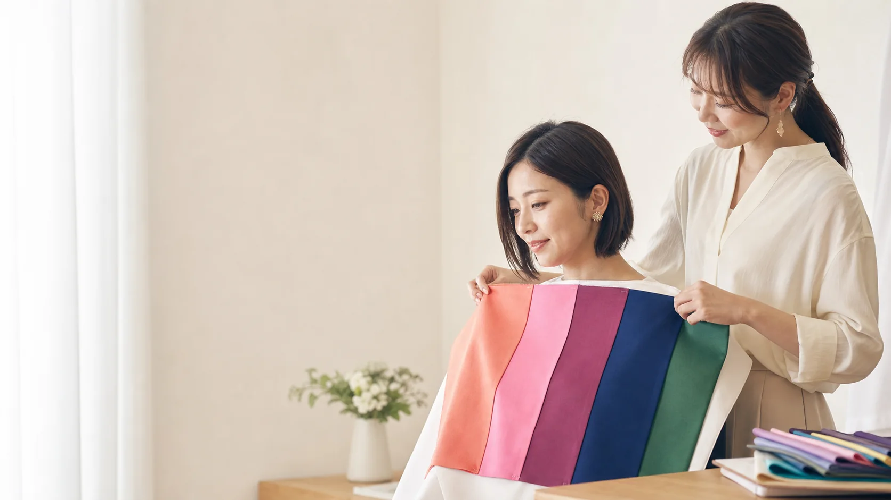
Your questions
毎日の小さな迷いが積み重なると、買い物もメイクも疲れてしまいます。Colorisは「正解を教える場所」ではなく、自分で選べる基準を持ち帰る場所です。
イエベ・ブルベだけでは分からない、明るさ・鮮やかさ・質感まで一緒に確認します。
色・形・素材を別々に見るのではなく、3つの診断結果を重ねてひとつの基準に整理します。
似合う色名ではなく、売り場でそのまま使える「見分け方」を具体的にお伝えします。
After the session
結果を「覚える」より、翌日の買い物で「使える」こと。服・コスメ・小物まで、迷ったときに戻れる自分だけの基準に変えてお渡しします。
得意な色と形だけでなく、手持ち服との合わせ方まで整理します。買い替えなくても今日から使えます。
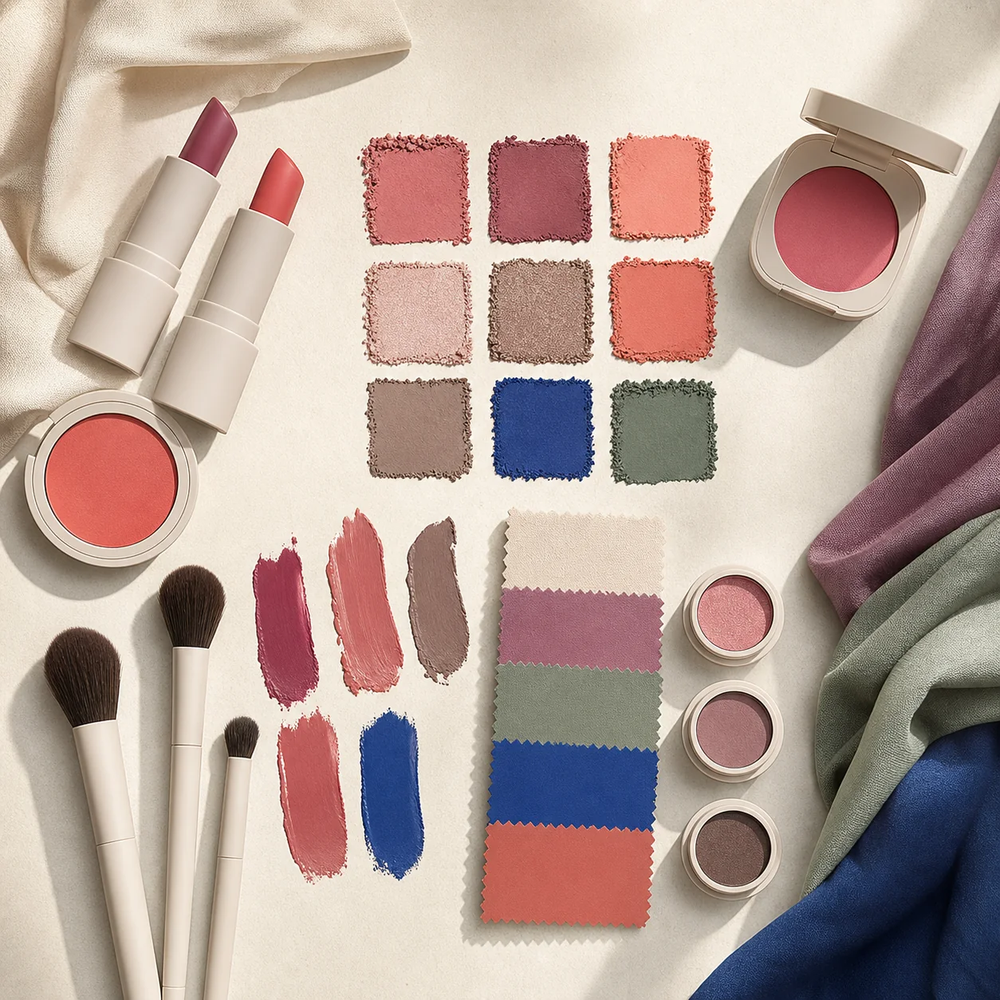
ブランドに左右されず、リップやチークを選ぶ視点を持ち帰れます。
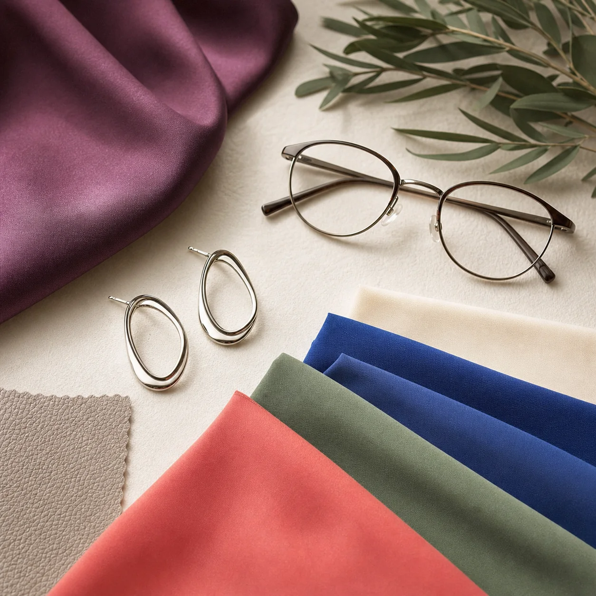
眼鏡、アクセサリー、バッグなど、顔まわりの印象を整えます。全体のバランスが格段に上がります。
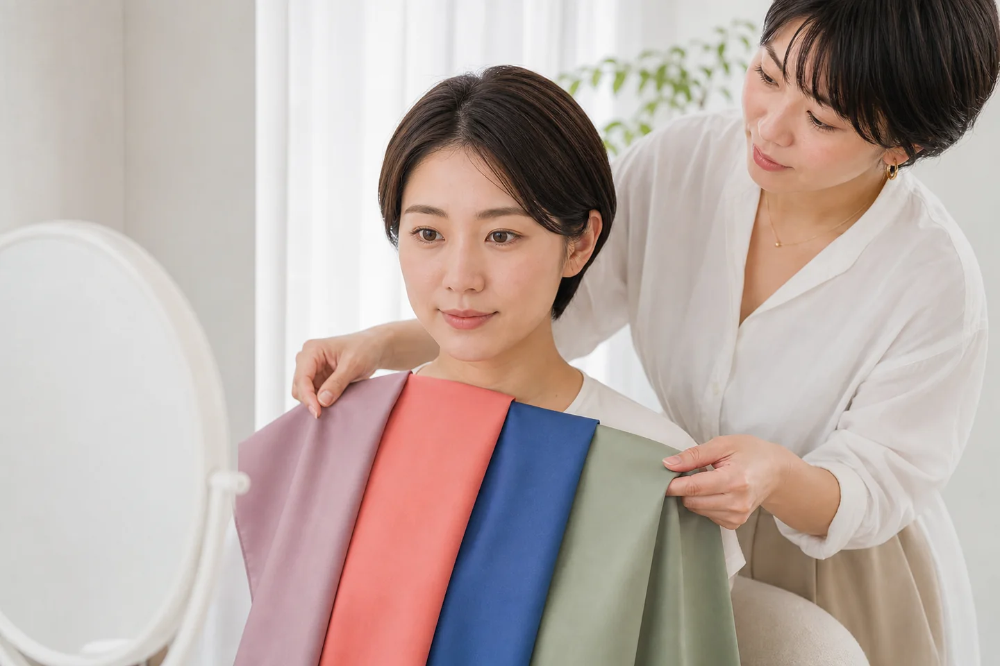
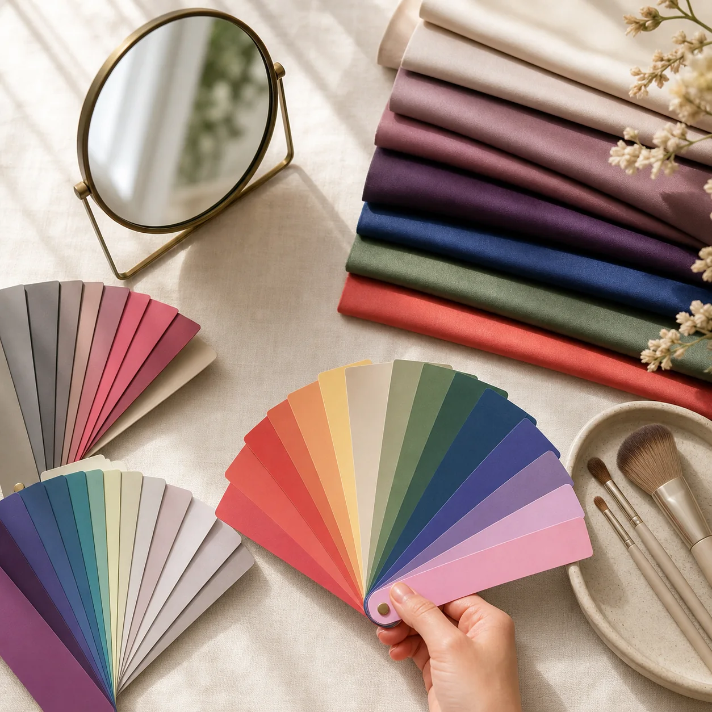
Personal color
パーソナルカラーは、肌の色だけで決まるものではありません。ドレープを当てたときの顔の見え方を丁寧に観察し、4つの色の特徴を組み合わせて整理します。
診断方法・分類名・提供資格は本番前に実際のサービス内容へ合わせます。
Why Coloris
診断結果をルールにせず、仕事・休日・大切な予定に合わせて使い分けます。あなたの「なりたい」が出発点です。
買い替えを前提にせず、今あるものをどう使うかから一緒に考えます。無駄な出費を減らしながら印象を変えます。
30日間のLINE相談で、実際に選ぶ中で生まれた疑問をすぐに解消できます。一人で悩まなくて大丈夫です。
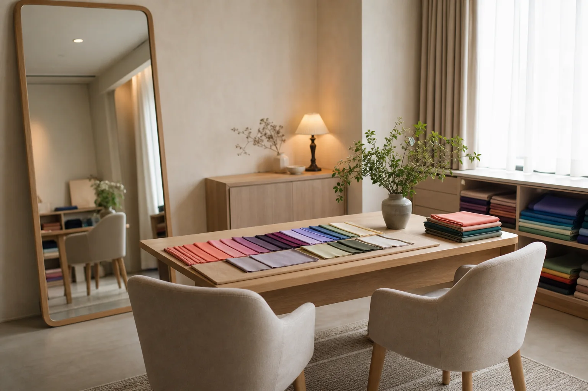
Private studio / by appointment onlyTotal styling
カラーだけでは服の形まで、骨格だけでは顔まわりの印象まで決まりません。3つの視点を重ねることで、買い物で使える一貫した基準をつくります。
肌・瞳・唇と調和する色の特徴、ベストカラー、コスメ・髪色の方向性をお伝えします。
身体の質感やバランスを見て、服の形・素材・サイズ感を整理します。着痩せにも直結します。
顔立ちの印象から、テイスト・柄・アクセサリー・髪型を提案します。顔まわりの印象が整います。
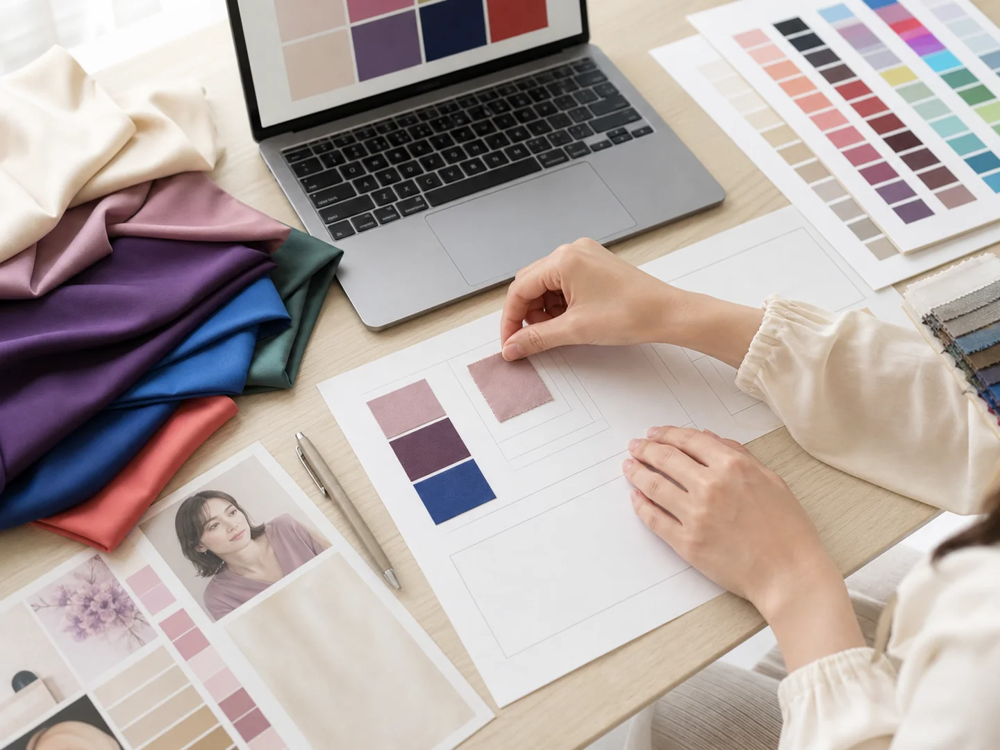
Take home
カラーカード、診断結果PDF、服・素材・コスメの要点、30日間のLINE相談をセットでお渡しします。買い物中にスマホで見返せる、実用的な内容です。
Session flow
希望メニューと候補日を送信。空き状況と所要時間をご案内します。
普段の服・コスメ、なりたい印象、困っている場面をお聞きします。
診断結果を比較しながら、日常で使える言葉へ丁寧に整理します。
カードとPDFを持ち帰り、30日間はLINEで質問できます。
Customer voice
実際にColorisを体験されたお客様からいただいたご感想です。
※以下はデモ用の架空のお客様の声です。
「今まで何となく選んでいた服が、診断後は根拠を持って選べるようになりました。買い物の失敗がほぼゼロになって、クローゼットがすっきりしてきました。30日間のLINE相談も、実際に使ってみてとても心強かったです。」
「SNSで何度も自己診断をしていたのに結果がバラバラで、ずっとモヤモヤしていました。プロに診ていただいて、初めて『なるほど、だから似合うんだ』と腑に落ちました。コスメの選び方まで変わって、毎朝のメイクが楽しくなりました。」
「仕事着を整えたくて受診しました。男性でも丁寧に対応いただき、スーツやネクタイの選び方まで具体的に教えていただけました。取引先への印象が変わったと言われることが増えて、受けてよかったと思っています。」
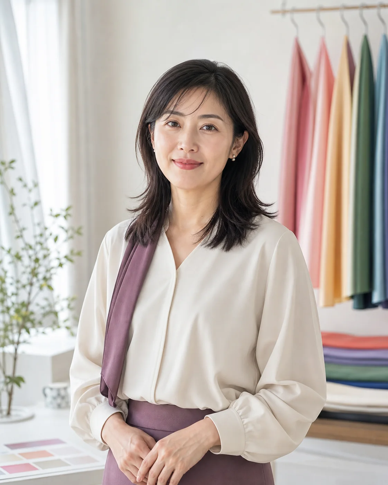
Profile
以前の私は、服やコスメを買うたびに「正解」を探していました。色彩を学ぶ中で、似合う色は自分を縛るものではなく、なりたい印象へ近づくための道具だと気づきました。
Colorisでは、タイプ名を伝えて終わりにするのではなく、翌日から自分で選べる言葉にしてお渡しすることを大切にしています。診断後も迷ったときに戻れる場所でありたいと思っています。
資格名・経歴・診断実績は本番公開前に証明書と本人回答を確認し、実情報のみ掲載します。
For every style
一人でじっくり、友人と一緒に、仕事着を整えたい男性にも。診断後の相談や買い物同行まで、必要な場面を選べます。
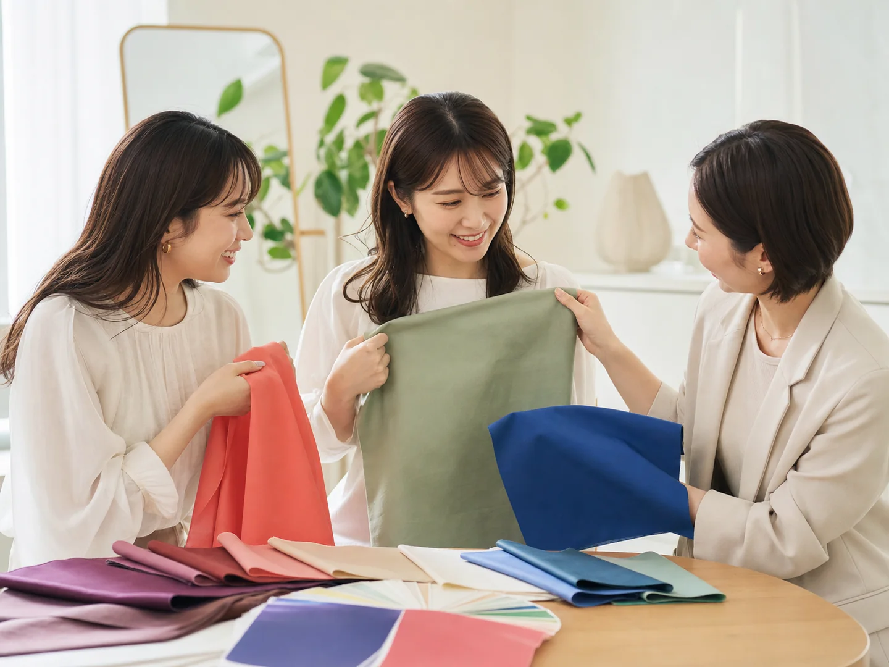
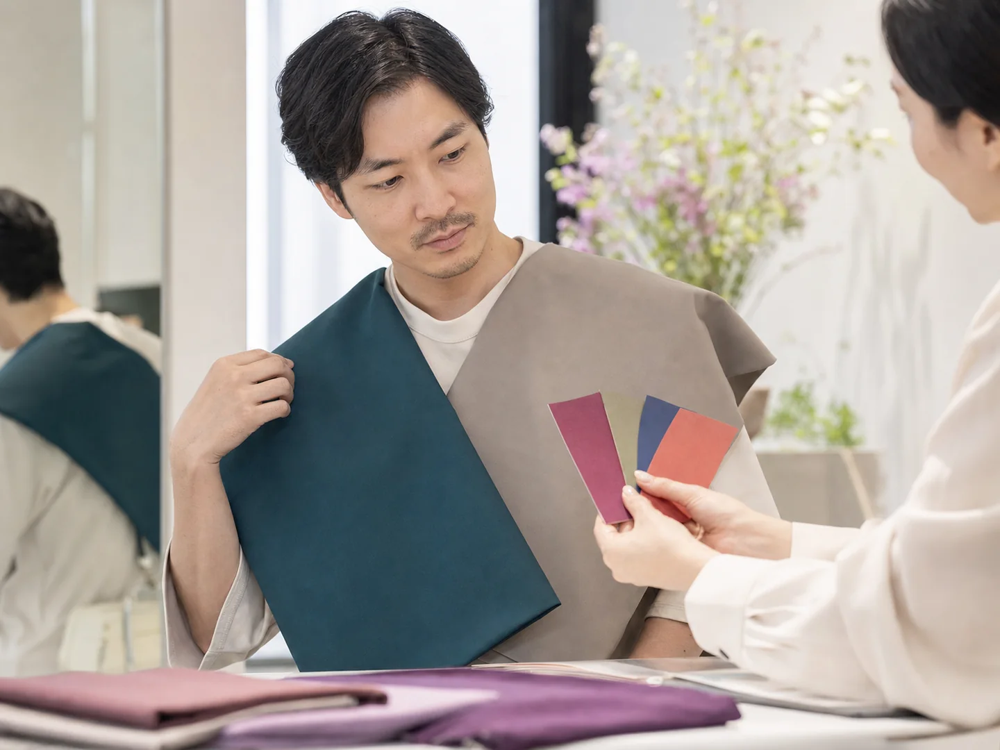
FAQ
分からないことは、予約前にLINEでお気軽にご相談いただけます。
普段の状態を確認するため、いつものメイクでお越しいただいて構いません。カラー診断では必要に応じて一部を落とします。カラーコンタクトは外せる準備をお願いします。
普段使うコスメ2〜3点、全身が分かる写真、好きな服の画像があると具体的にご提案できます。必須ではありませんので、手ぶらでもお越しいただけます。
はい、性別を問わずご利用いただけます。仕事着・眼鏡・髪色など、相談したい場面を事前にお知らせいただくと、より具体的なご提案が可能です。
画面・照明・カメラによる色差があるため、このデモ設定ではタイプ確定は対面のみです。オンラインは既存結果の活用や、服・コスメの相談として提供しています。
はい。診断結果はPDFとカラーカードにまとめてお渡しします。スマートフォンでいつでも確認でき、買い物中にその場で見返すことができます。
デモ設定では3日前まで無料、2日前30%、前日50%、当日・無断100%です。体調不良や交通事情による振替条件を含め、本番前に正式規定へ差し替えます。
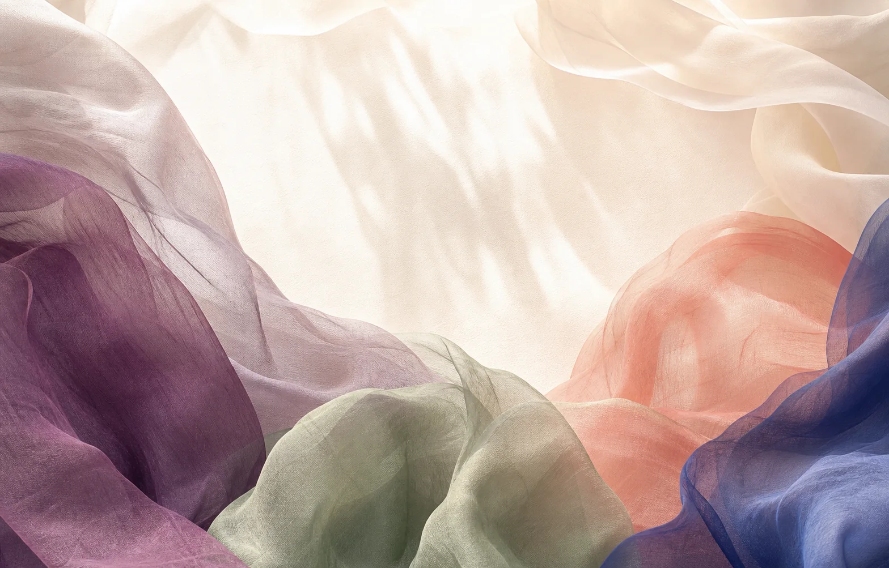
Reservation
メニューが決まっていなくても大丈夫です。希望時期と気になることをLINEでお送りいただくだけでOKです。
デモのため、LINEは起動せず送信もされません